IMU (Interurban Multiple Unit)¶
The IMUs were introduced to provide new rollingstock for the Gold Coast line in 1996. The IMUs are a long-distance optimised version of the SMUs, with extra features such as larger seats, luggage racks, toilets[2]. On the exterior, they are similar enough that Queensland Rail uses identical photos for them on their "Carriage Layouts" section. Another difference is the IMU100 and 120's higher top speeds than their SMU counterparts. I think it is due to a better cooling system for one of the parts (traction motors?), but I can't seem to find the place where I read it again. They also have a higher gear ratio of 1:4.367 vs 1:5.169 on the SMUs (not sure which variant tho, possibly the 100/200?)[4, 10].
Depots: Mayne, Robina, Nambour[11]
Common Lines Served: Gold Coast line, Airport line, Nambour and Gympie North line[11]
EDI/Bombardier Interurban Multiple Unit 100 series (IMU100)¶
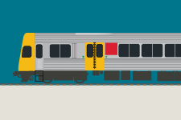
The IMU100 as seen on QR's Carriage Layouts page
Timeline¶
- 1993: A contract for four IMU100 units was awarded to Walkers Limited, Maryborough[2].
- July 1995: As only four IMU100s were never adequate to service the line, a further six were ordered, numbered IMU105-110[2].
- 1996: The first four IMU100s, IMU101-104, entered service before the opening of the new line[2].
- 1997: IMU105-110 delivered[2].
- March - November 2001: IMU100s upgraded to meet the new Disability Standards for Accessible Public Transport requirements based on the IMU120 design. This upgrade included, but was not limited to, the addition of six allocated spaces in the saloon of the DT Car because this car housed the wheelchair accessible toilet and it was not feasible for passengers to be expected to move from one end of the unit to the other. This was due to the aisle width between the transverse seats being of insufficient width to provide an effective accessible pathway[9].
- 2017: IMU100s and SMU200s underwent an overhaul, including an upgrade of the traction package and Train Control Managment System on 10 IMU100s and 12 SMU200s, and one of the pneumatic cab doors of an IMU100 got upgraded. This work was done by Downer EDI Rail for $105,430,828[13].
- December 2018: Downer secured a $80 million contract to refurbish the IMU100s along with the SMU200s at their Maryborough Service Delivery Centre. The upgrades included[8]:
- An interior refresh – new floor coverings, refreshed handrails and grab handles and new seat foams and covers for enhanced customer experience.
- An overhaul of key train subsystems to ensure the safety and reliability of the fleet.
- New electrical systems (in partnership with ABB), including upgrade of onboard traction equipment and installation of a new Train Control Management System (TCMS).
- January 17, 2020: QR paid out $2.6 million to CoachAir for
"2019 IMU100 SMU200 HVAC Overhaul", possibly as part of Downer's refurbishment that started Dec 2018[12]. - 2023: QR replaced the routers in EMUs, IMU100s, SMU200s, IMU120s, and SMU220s. The work was contracted out to Nomad Digital and cost $1.75 million[12].
- 2023: Refurbishment of IMU100s and SMU200s was completed including the interiors, with the sole exception of IMU105, which still retains it's green ocean themed seat covers[8].
Carriage Layout¶
Carriage 1¶
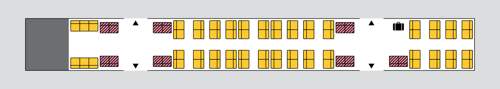
Carriage 2¶
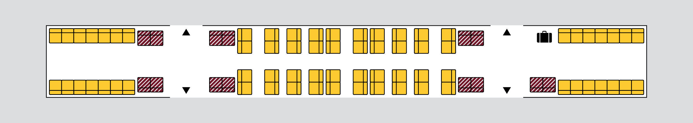
Carriage 3¶
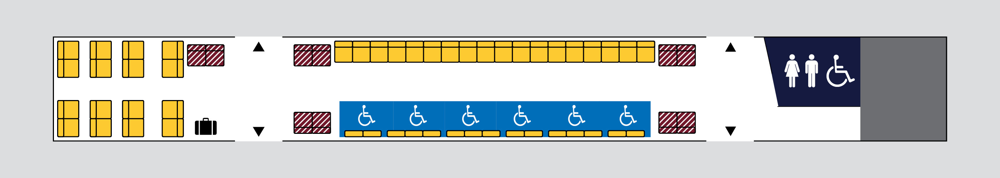
EDI/Bombardier Interurban Multiple Unit 120 series (IMU120)¶
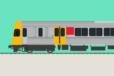
The IMU120 as seen on QR's Carriage Layouts page
Quirks¶
To keep the auxiliary converters (and systems) online through neutral sections 220’s and 120’s automatically apply a small amount of regenerative braking when traversing neutral sections at speeds above 20km/h. This reduces the need to rely on the battery system and is why they maintain full lighting and air conditioning compared to other units in the fleet.
For some reason at speeds around 40-60km/h they can produce a rather nasty shudder through the train. As a driver there isn’t much that can be done to prevent it. Some do it, some don’t, some are worse than others. Just a quirk of the units. Source: https://www.reddit.com/r/BrisbaneTrains/comments/1hikjzi/comment/m321aky
Carriage Layout¶
Carriage 1¶
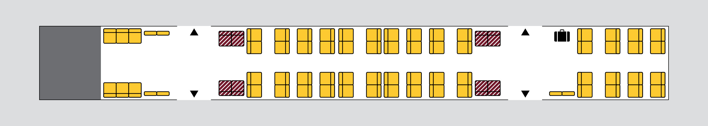
Carriage 2¶
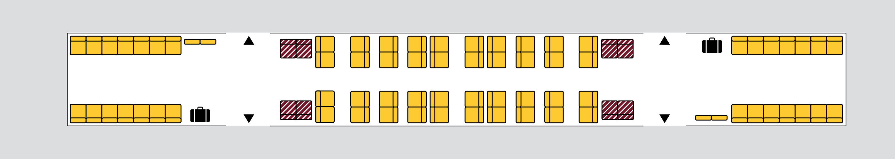
Carriage 3¶
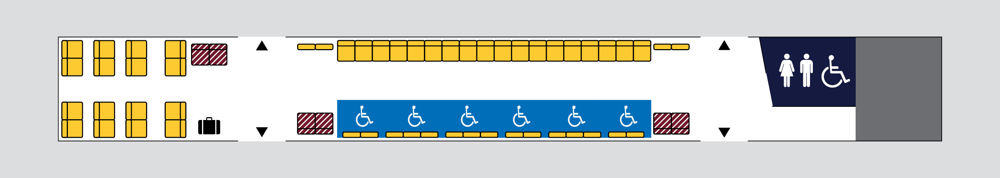
Detailed Carriage Layout¶
Source archived here - see figure A2
Carriage 1¶

Carriage 2¶

Carriage 3¶

EDI/Bombardier Interurban Multiple Unit 160 series (IMU160)¶
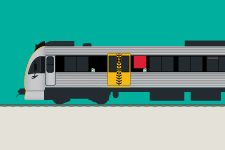
The IMU160 as seen on QR's Carriage Layouts page
Carriage Layout¶
Carriage 1¶
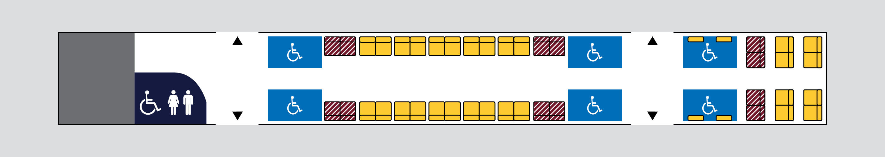
Carriage 2¶
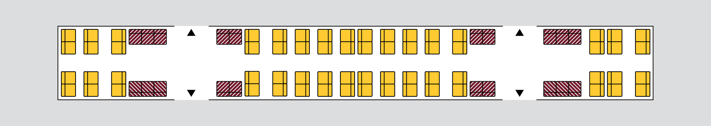
Carriage 3¶
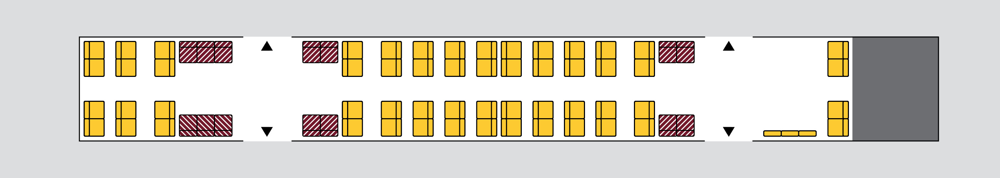
Sources¶
- [1] https://qrig.org/motive-power/self-propelled-passenger-stock/electric-multiple-units/edibombardier-interurban-multiple-unit-100-series-imu100
- [2] https://en.wikipedia.org/wiki/Interurban_multiple_unit
- [3] https://www.railtram.com.au/imu-interurban-multiple-unit-100
- [4] http://www.railpage.org.au/qrhistory/html/locomotives/electrics/imu.htm
- [5] https://www.queenslandrail.com.au/forcustomers/accessibility/carriage-layouts/imu-100
- [6] https://www.queenslandrail.com.au/forcustomers/accessibility/carriage-layouts/imu-120
- [7] https://www.queenslandrail.com.au/forcustomers/accessibility/carriage-layouts/imu-160
- [8] https://www.downergroup.com/downer-secures-80-million-queensland-rail-con
- [9] railknowledgebank Archived here
- [10] http://www.railpage.org.au/qrhistory/html/locomotives/electrics/smu.htm
- [11] https://en-academic.com/dic.nsf/enwiki/6614269
- [12] https://www.data.qld.gov.au/dataset/queensland-rail-contract-disclosure-fy2023-2024/resource/22563422-0ea2-4bb0-80fb-a0428afc6365 archived here
- [13] https://www.data.qld.gov.au/dataset/queensland-rail-contract-disclosure-fy2022-2023/resource/d135ec7d-4a7a-40b2-98e4-3df90365f374 archived here